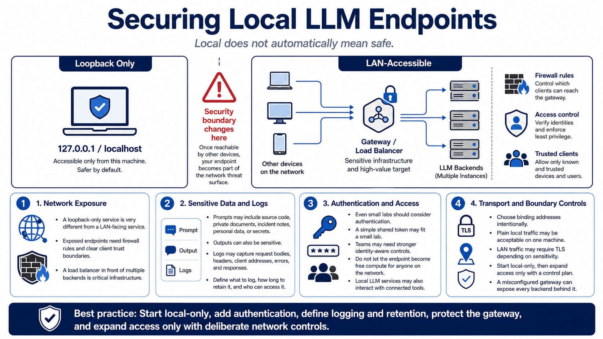

Security and Local Network Operations
Connecting to LMS... Progress: in progress

Narration
Local does not automatically mean safe. A server bound only to loopback is very different from one listening on a LAN interface. Once a local LLM endpoint is reachable by other devices, it needs firewall rules, access control, logging decisions, and a clear definition of trusted clients. A load balancer that exposes several backends becomes sensitive infrastructure.
Prompts can contain private documents, source code, operational details, incident notes, personal information, or secrets accidentally pasted into a request. Outputs can also be sensitive. Logs may capture bodies, responses, headers, client addresses, and errors. Decide what should be logged, how long logs should remain, and who can read them before expanding access.
Authentication should be considered even in small environments. A lab may use a simple shared token, while a team may need stronger identity-aware controls. The endpoint should not become a free compute resource for anyone on the network. Local LLM servers can consume expensive resources, process sensitive information, and interact with connected tools.
TLS, binding addresses, and firewall boundaries should be intentional. Plain local traffic may be fine on one machine, while LAN traffic may require encryption depending on sensitivity. Start local-only, then expand access only with a control plan. A load balancer can centralize security, but a misconfigured gateway can expose every backend behind it.